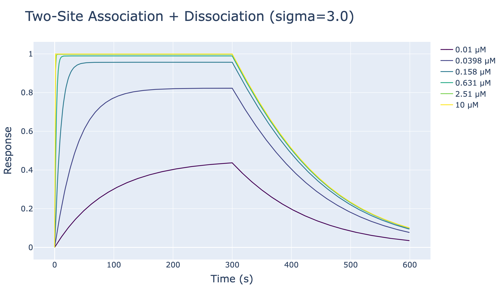
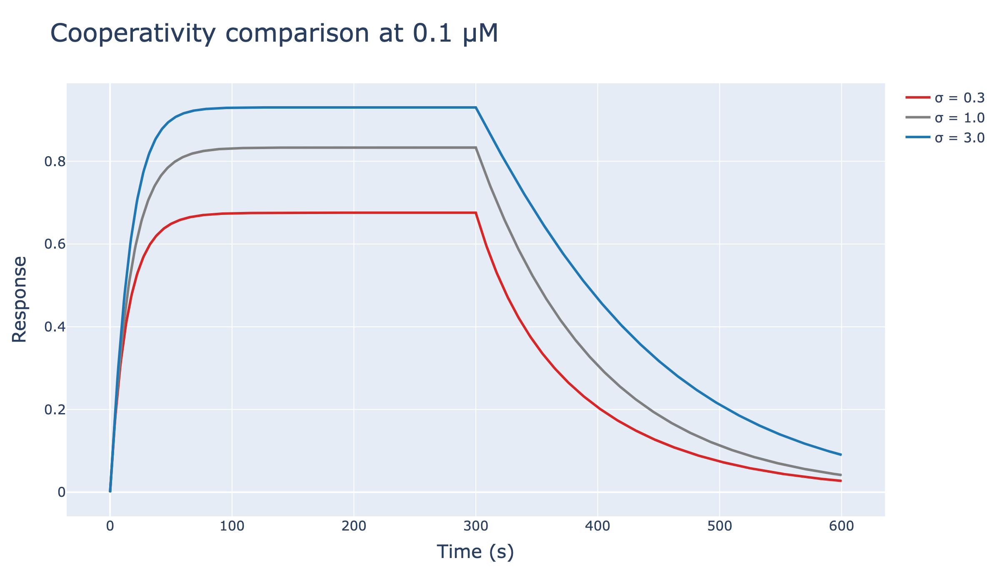

Two-Site Binding Model with Cooperativity
This notebook simulates surface response traces for a ligand P with two equivalent binding sites whose second binding event is modulated by cooperativity.
The analyte L binds sequentially:
P + L ⇌ PL (singly bound)
PL + L ⇌ LPL (doubly bound)
A cooperativity factor sigma modifies the second binding step:
sigma > 1: positive cooperativitysigma = 1: non-cooperative limitsigma < 1: negative cooperativity
Both bound states contribute to the measured signal through Rmax_PL and Rmax_LPL.
[12]:
import numpy as np
from pykingenie.utils.signal_surface import (
solve_two_site_cooperative_association,
solve_two_site_cooperative_dissociation,
)
from pykingenie.utils.plotting import plot_traces
from pykingenie.utils.palettes import VIRIDIS
from notebook_helpers import show_plotly_static
Parameters
kon: intrinsic association rate constant per site \((1/\mu M/s)\)koff: intrinsic dissociation rate constant per site \((1/s)\)sigma: cooperativity factor for the second binding eventRmax_PL: signal contribution of the singly bound complexRmax_LPL: signal contribution of the doubly bound complex
In this implementation:
on-rate for the second step \(= \sqrt{\sigma}\,k_{on}\)
off-rate for the second step \(= k_{off}/\sqrt{\sigma}\)
[13]:
kon = 0.5
koff = 0.01
sigma = 3.0 # >1 positive cooperativity, <1 negative cooperativity
Rmax_PL = 0.5
Rmax_LPL = 1.0
[14]:
concentrations = np.logspace(-2, 1, 6) # In μM
t_assoc = np.linspace(0, 300, 400)
t_disso = np.linspace(0, 300, 400)
colors = [VIRIDIS[int(i)] for i in np.linspace(0, len(VIRIDIS) - 1, len(concentrations))]
[15]:
combined_xs, combined_ys, legends = [], [], []
for conc in concentrations:
assoc_matrix = solve_two_site_cooperative_association(
time=t_assoc,
a_conc=conc,
kon=kon,
koff=koff,
sigma=sigma,
Rmax_PL=Rmax_PL,
Rmax_LPL=Rmax_LPL,
fPL_0=0,
fLPL_0=0,
)
y_assoc = assoc_matrix[:, 0]
fPL_end = assoc_matrix[-1, 1] / Rmax_PL if Rmax_PL else 0
fLPL_end = assoc_matrix[-1, 2] / Rmax_LPL if Rmax_LPL else 0
disso_matrix = solve_two_site_cooperative_dissociation(
time=t_disso,
koff=koff,
sigma=sigma,
Rmax_PL=Rmax_PL,
Rmax_LPL=Rmax_LPL,
fPL_0=fPL_end,
fLPL_0=fLPL_end,
)
y_disso = disso_matrix[:, 0]
combined_xs.append([t_assoc, t_disso + t_assoc[-1]])
combined_ys.append([y_assoc, y_disso])
legends.append(f"{conc:.3g} μM")
show = [True] * len(concentrations)
[16]:
fig = plot_traces(
xs=combined_xs,
ys=combined_ys,
legends=legends,
colors=colors,
show=show,
marker_size=1,
line_width=2,
)
fig.update_layout(
title={"text": f"Two-Site Association + Dissociation (sigma={sigma})", "font": {"size": 32}},
xaxis_title="Time (s)",
yaxis_title="Response",
font={"size": 20},
legend={"font": {"size": 18}},
)
fig.update_xaxes(title_font={"size": 24}, tickfont={"size": 18})
fig.update_yaxes(title_font={"size": 24}, tickfont={"size": 18})
show_plotly_static(fig)

Negative cooperativity example
Here we compare three regimes at the same analyte concentration:
sigma = 0.3: negative cooperativitysigma = 1.0: non-cooperative referencesigma = 3.0: positive cooperativity
When sigma < 1, the second binding event is less favorable, so the doubly bound state accumulates less strongly and the total response is reduced.
[18]:
sigma_values = [0.3, 1.0, 3.0]
comparison_colors = ["#d62728", "#7f7f7f", "#1f77b4"]
comparison_conc = 0.1 # μM
xs_cmp, ys_cmp, legends_cmp = [], [], []
for sigma_cmp in sigma_values:
assoc_cmp = solve_two_site_cooperative_association(
time=t_assoc,
a_conc=comparison_conc,
kon=kon,
koff=koff,
sigma=sigma_cmp,
Rmax_PL=Rmax_PL,
Rmax_LPL=Rmax_LPL,
fPL_0=0,
fLPL_0=0,
)
fPL_cmp = assoc_cmp[-1, 1] / Rmax_PL if Rmax_PL else 0
fLPL_cmp = assoc_cmp[-1, 2] / Rmax_LPL if Rmax_LPL else 0
disso_cmp = solve_two_site_cooperative_dissociation(
time=t_disso,
koff=koff,
sigma=sigma_cmp,
Rmax_PL=Rmax_PL,
Rmax_LPL=Rmax_LPL,
fPL_0=fPL_cmp,
fLPL_0=fLPL_cmp,
)
xs_cmp.append([t_assoc, t_disso + t_assoc[-1]])
ys_cmp.append([assoc_cmp[:, 0], disso_cmp[:, 0]])
legends_cmp.append(f"σ = {sigma_cmp}")
fig_cmp = plot_traces(
xs=xs_cmp,
ys=ys_cmp,
legends=legends_cmp,
colors=comparison_colors,
show=[True] * len(sigma_values),
marker_size=1,
line_width=3,
)
fig_cmp.update_layout(
title={"text": f"Cooperativity comparison at {comparison_conc} μM", "font": {"size": 30}},
xaxis_title="Time (s)",
yaxis_title="Response",
font={"size": 18},
legend={"font": {"size": 16}},
)
fig_cmp.update_xaxes(title_font={"size": 22}, tickfont={"size": 16})
fig_cmp.update_yaxes(title_font={"size": 22}, tickfont={"size": 16})
show_plotly_static(fig_cmp)
